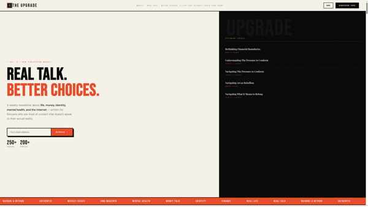

Business thinking
Looking at the bigger picture and the people an idea is for.
DIGITAL CREATIVE · NAIROBI, KENYA
Hi, I’m Beryl. I bring together design, technology and business thinking to make digital ideas clearer, more useful and more human.
THE PERSON BEHIND THE BYTES
I’m a digital creative who likes asking questions, learning new things and making ideas easier to understand.
My background includes Business Administration, ICDL digital skills and freelance writing. Together, they shape how I approach digital work: with curiosity, a practical mindset and an eye for clear communication.
Right now, I’m studying Cybersecurity and CCNA through Cisco Networking Academy while building practical experience in web development, UI/UX and digital communication.
I enjoy turning ideas into digital experiences that look thoughtful and feel easy to use.
Looking at the bigger picture and the people an idea is for.
Bringing design, writing and fresh ideas into the mix.
Building digital skills and exploring how technology works.
A FEW THINGS I’M WORKING ON
A little design, a little tech and a lot of curiosity. Here’s some of what I’ve been working on.

A digital platform for real talk about life, money and the things that matter to Kenyans. Built around clear ideas and an engaging online experience.
Visit The UpgradeA digital pharmacy and health experience in progress. Take a look at the preview to see the direction the project is taking.
Preview Beryl PharmacyTHE TOOLKIT
I like exploring the space between creative ideas, practical business thinking and technology.
Responsive websites, front-end and deployment.
Interfaces, visual systems and user flows.
Copy, research, editing and digital storytelling.
Campaign thinking, positioning and online presence.
Security foundations, networking and CCNA studies.
Strategy, customer perspective and problem-solving.
04 / LET’S CONNECT
Whether it’s a website, digital product, content project or collaboration, I’d love to hear about it. Send me a message and I’ll get back to you.